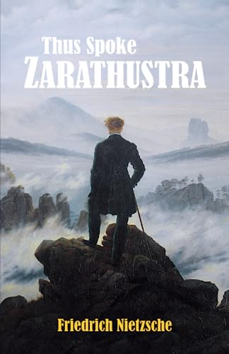

მთავარი გვერდი
კატეგორიები
სიახლე
კონტაქტი
იდეალიზმი ლიტერატურაში ხშირად ეხება პერსონაჟების, თემების ან ნარატივების ასახვას, რომლებიც განასახიერებენ კეთილშობილურ მისწრაფებებს, პრინციპებს ან რწმენას. აი, როგორ აისახება იდეალიზმი თქვენს მიერ ჩამოთვლილ ზოგიერთ წიგნში:
დონ კიხოტი
საბრალონი

ესე იტყოდა ზარატუსტრა
გრაფი მონტე კრისტო
შაგრენის ტყავი